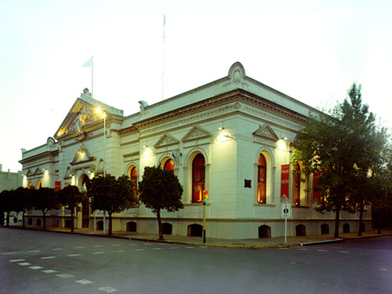
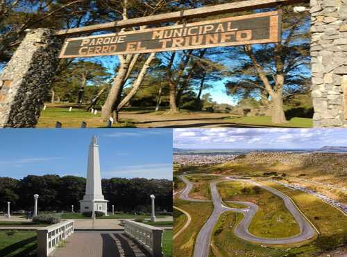
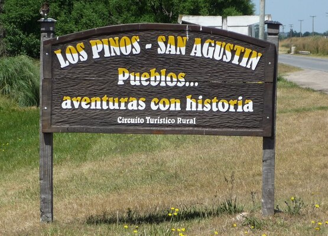

San Jose De Balcarce
Ubicada al Sudeste de la Provincia de Buenos Aires la ciudad de Balcarce cuenta la paz y la tranquilidad tipica de las ciudades serranas.
Leer mas

Museo J.M. Fangio
Rinde homenaje al Quintuple Campeón Mundial de F1 y resume en forma dinámica la historia del automovilismo.
Visita el Museo.jpeg)
Laguna La Brava
Ubicada en el km 40 de la ruta nacional 226, este espejo de agua es un paraiso escondido en la serranía.
Ir a algún lugar

City Tour
El Cerro El Triunfo,el Autodromo y Plaza Libertad, son algunos de los lugares que no podes dejar de visitar.
Ir a algún lugar

Leer mas